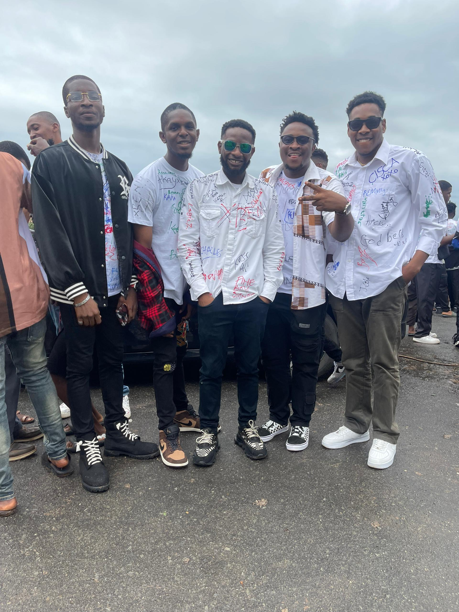

Uwaezuoke Franklin Chetachukwu
Lagos State, Nigeria
07080083914 | franklinchetus4t@gmail.com
Online Portfolio: https://softlink314.github.io/html-CV/
Professional Summary
Customer-focused and tech-savvy Computer Science graduate with hands-on experience supporting clients in fast-paced environments,
including banking and ICT. Strong communicator with practical skills in digital tools, troubleshooting, and service delivery.
Currently enhancing web and IT knowledge for dynamic roles in admin, support, and customer engagement.
Education
Bachelor of Technology (B.Tech) in Computer Science
Federal University of Technology, Owerri
Graduated: 2023 | GPA: 4.10 (Second Class Upper)
Relevant Coursework (Foundational Knowledge): IT Project Management, Computer Networks, Database Systems,
Web Development, Human-Computer Interaction.
National youth Service Corps (NYSC)
Status: Awaiting Deployment
Expected Call-Up: June 2025
Skills
Technical Skills: Microsoft Excel, PowerPoint, HTML, CSS, Computer Hardware Maintenance, Basic Networking
Soft Skills: Strong communication, Teamwork, Customer service, Problem-solving, Time management
Other Tools: CRM platforms (basic knowledge), Internet troubleshooting, Helpdesk support
Certifications & Training
Microsoft Office (Excel, Word, PowerPoint) – Proficient (Practical Use)
CompTIA IT Fundamentals (ITF+) – Currently Studying
Cisco Networking & CCNA Routing and Switching – Training Completed (Certificate not available)
Trained in resolving client-facing issues in banking and ICT environments
Professional Experience
Customer Service Intern
Fidelity Bank Plc – Onitsha, Anambra State
May 2022 – November 2022
Assisted customers with technical and transactional issues on the mobile banking app
Provided frontline support, troubleshooting, and resolving common banking queries
Logged and followed up on customer complaints to ensure resolution
Maintained professionalism in a high-pressure environment
Computer Operative / Customer Service Assistant
Obidon ICT Hub – Onitsha, Anambra State
Provided basic IT support and technical assistance to walk-in clients
Handled data entry, printing, and computer operation tasks
Advised customers on ICT solutions and assisted with common software use
References
Available upon request.